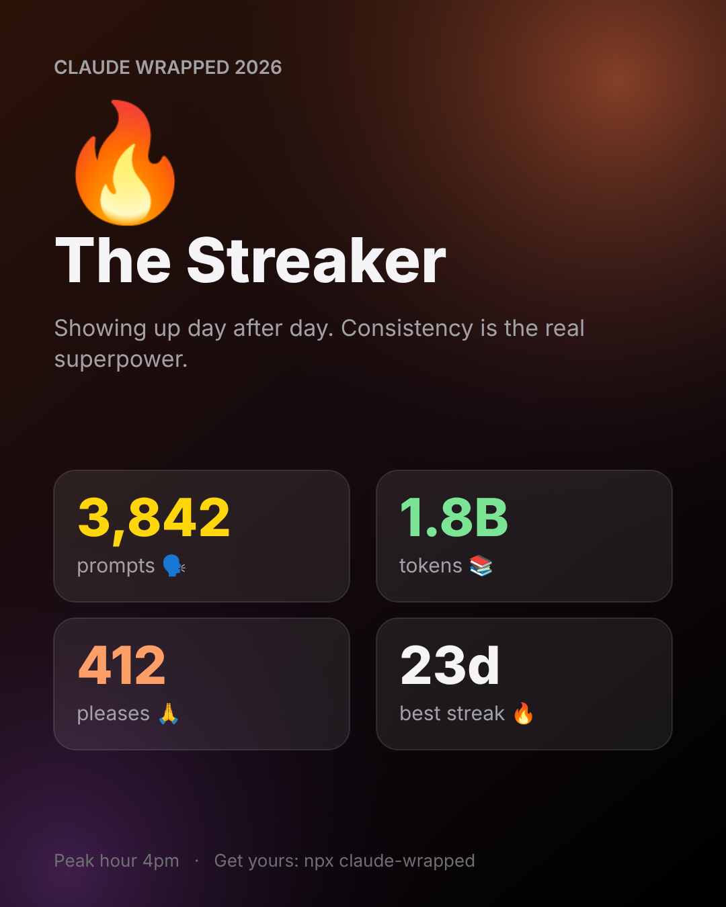

🐶 Free · Open source · 100% local
View on GitHubFAQ
Claude Wrapped
Your Claude Code year in review. One command turns your history into a story and a card worth sharing.
npx claude-code-wrapped
View on GitHubFAQ

What you get 🎁
🗣️Prompts and streaksSessions, active days and your best run.
🙏Your mannersHow many times you said please. And swore. 🤬
🔥Year heatmapA GitHub-style calendar of your days with Claude.
🌍LanguagesWhat Claude wrote for you, from TypeScript to Python.
🏆11 badgesMarathoner, Night Owl, Polite Human and more.
🐶A personalityGood Boy Builder, Night Owl, Gentleman, Streaker...
FAQ 🤔
What is Claude Wrapped?
A free, open-source command-line tool that summarizes your Claude Code usage for the year, like Spotify Wrapped does for music.
How do I run it?
Run npx claude-code-wrapped in your terminal. It needs Node 18 or newer and no account or API key.
Is my data uploaded?
No. It reads transcripts stored on your computer and makes no network calls. The share card contains only totals, never prompt text or project names.
Where does it get its data?
From the transcript files Claude Code saves locally in ~/.claude/projects.
How do I see last year's stats?
Run npx claude-code-wrapped --year 2025.